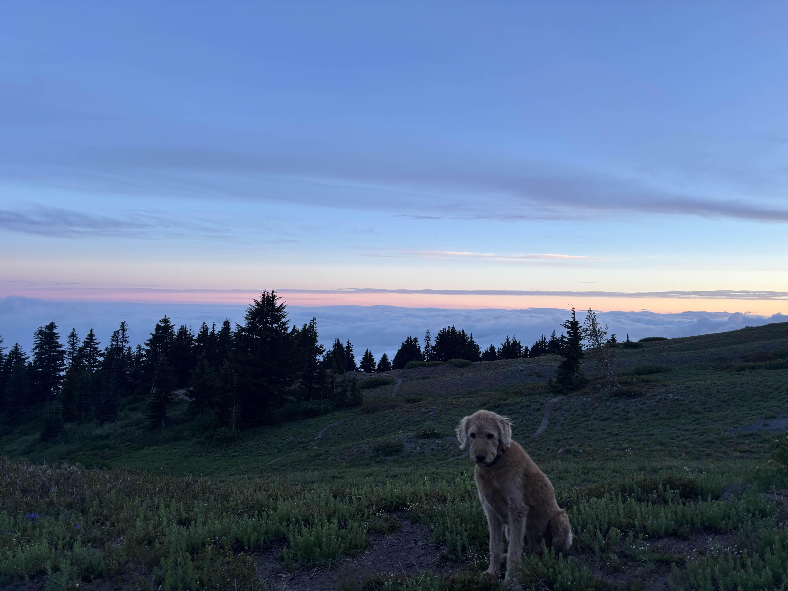
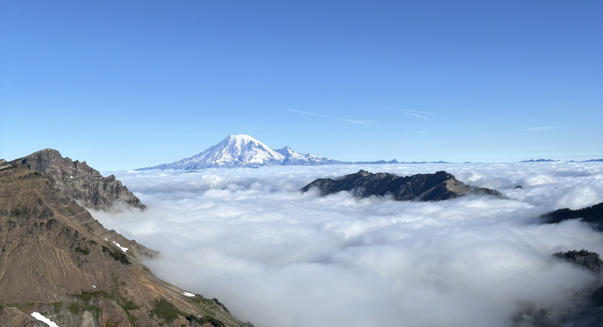
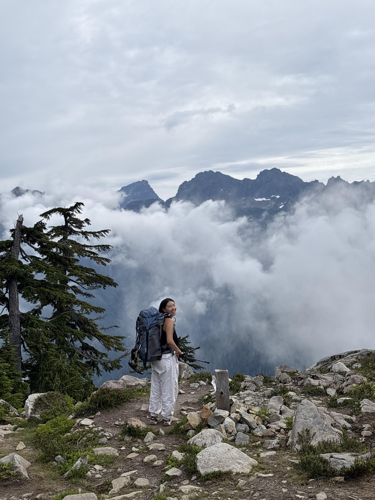

About
AboveDeck means what it sounds like: we want to be above the cloud deck — on the sunny side of a mountain inversion while valleys sit in fog and grey.


What is a cloud inversion?
In a typical atmosphere, temperature falls with height. During a temperature inversion, a layer of warmer air sits above cooler air near the ground. That “lid” traps cold air—and often fog or low stratus—in valleys and basins. Ridges and peaks poke through into clearer, often sunnier air, so the valleys look like a soft white ocean: a “sea of clouds,” with summits as islands.
What causes it?
Mountain inversions are common when nights are clear and calm: the ground cools, cold air drains downhill into valleys, and a warmer layer forms above. High pressure, light winds, and moist valley air make low cloud or fog more likely. In the Pacific Northwest, terrain and marine moisture help set the stage—especially in the Cascades and Coast Range—though the exact height of the deck shifts with time of day, season, and weather pattern.
That variability is why these mornings are hard to call from a generic city forecast: the difference between socked-in and spectacular can be a few hundred feet of elevation and a couple of hours of burn-off.
Why it’s worth chasing
Being above the deck means sun on a cloudy day—golden light over a white ocean, cold-clear air on the ridge, and a view most people in the valleys never see. That’s magic for hikers, backpackers, photographers, and skiers planning an early start or a ridge traverse. AboveDeck’s job isn’t another temp-and-rain summary. It’s to help answer: where should you go to be above the clouds?

Prior work
How the model idea started
The concept grew from a school visualization and ML project over the Alps (dashkim/clouds). Using ERA5 reanalysis, a ridge regression related meteorological features to inversion structure and compared predictions with observations—chosen for interpretability over a heavier neural net that was harder to train and explain.
That Alps work is background, not the live Pacific Northwest forecast engine. AboveDeck’s map scores are still being built (rule-based elevation vs cloud base first, then richer models). The animation below shows what “model vs reality” looked like in that earlier project.
Full composite on YouTube